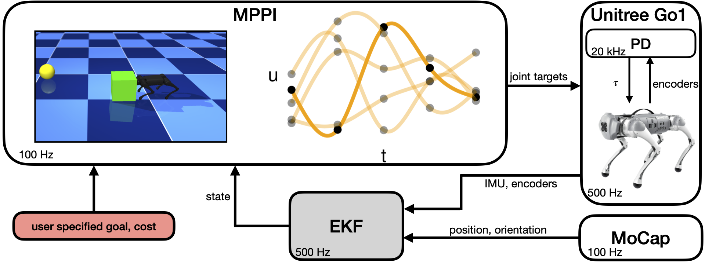
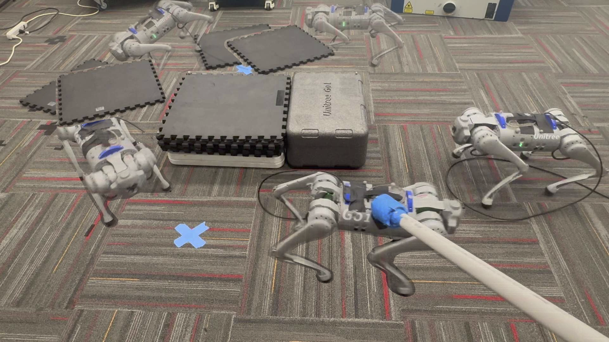
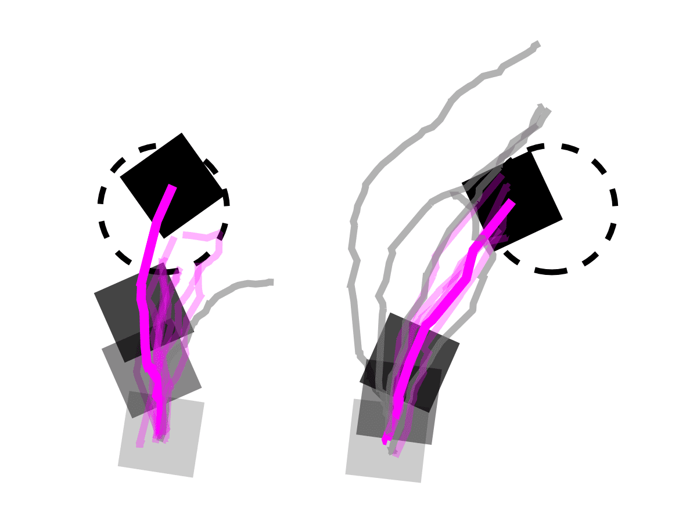

System diagram for deploying the MPPI policy on a Unitree Go1 robot. Joint target controls (u) are sampled at the evenly distributed knot points (black dots) and represented as a cubic spline over the planning horizon. A cost from each sample is evaluated based on the user-specified goal (yellow ball) and cost function. The first control from the control sequence with the lowest total cost (opaque orange line) is applied to the robot and repeated in a receding-horizon fashion. The robot’s state is estimated using an EKF from motion-captured position and orientation, robot onboard IMU, and joint encoder measurements.

Go1 robot walking in a clockwise hexagon trajectory under small to moderate model mismatch and external disturbance. More transparent robots represent earlier keyframes.

Keyframes from the Unitree Go1 robot climbing up and down a box of its own height with the MPPI policy on hardware (top row) and corresponding MuJoCo states (bottom row). The robot is tasked to reach the consecutive goals (yellow spheres) specified in the task.
